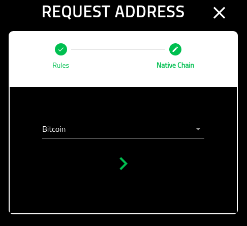
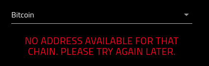

Request Address¶
About¶
This page provides an overview if requesting an address for Crowdfund. This address, once allocated will be used to send tokens to.
Note that:
Addresses are only good for 15 mins
You can only get one address an hour

Get Address¶
Once you agree to the terms, you will now be able to claim an address.
In the event that no address is available, you will be presented with the following error message.
If you are successful, you will be directed to the screen with you allocated address.
For more information on using the allocated address, please see the following: